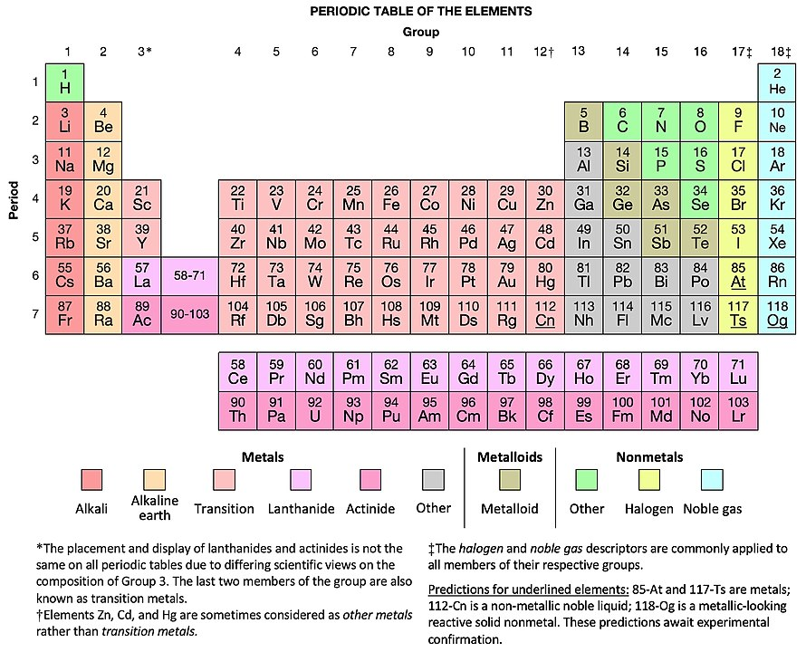

import pandas as pd1 Tablas de datos
1.1 ¿Qué es una tabla de datos?
Responder a esta pregunta se siente muy parecido a responder a “¿qué es un vaso de agua?”, parece ser difícil hacerlo sin caer en algo de redundancia. Pero bueno, aquí vamos:
Una tabla de datos es una representación de cualquier tipo de información en forma tabular, es decir, ordenada en filas y columnas.
Los ejemplos de tablas de datos son muchos y los hay muy antiguos como esta tableta de arcilla que data de alrededor del 3000 A.C., usada para mantener cuentas de granos de malta y cebada1:
Otro ejemplo más conocido, es la tabla periódica de los elementos2:

Las tablas de datos que en realidad nos interesan aquí son más tradicionales: aquellas que tienen información representada por números o cadenas de caracteres (o strings).
1.1.1 Tablas largas
Notemos que tal y como señala la definición de tabla de datos que hemos entregado más arriba, una tabla es sólo una representación de ciertos datos. Esto implica que puede haber más de una tabla para representar a un conjunto de datos.
Por ejemplo, consideremos la siguiente tabla que representa los resultados de dos exámenes médicos para tres personas:
| Examen 1 | Examen 2 | |
|---|---|---|
| Juan | 10 | 2 |
| Clara | 15 | 5 |
| Lin | 9 | 4 |
Otra manera de representar la misma información es simplemente trasponiendo la tabla anterior (cambiando las filas por columnas):
| Juan | Clara | Lin | |
|---|---|---|---|
| Examen 1 | 10 | 15 | 9 |
| Examen 2 | 2 | 5 | 4 |
Una tercera manera, que puede parecer un poco menos eficiente, es la siguiente:
| Nombre | Examen | Resultado |
|---|---|---|
| Juan | Examen 1 | 10 |
| Clara | Examen 1 | 15 |
| Lin | Examen 1 | 9 |
| Juan | Examen 2 | 2 |
| Clara | Examen 2 | 5 |
| Lin | Examen 2 | 4 |
En esta tabla parece que estuviésemos repitiendo información, sin embargo tiene una característica que la hacen mucho más sencilla de manipular, analizar y visualizar:
Cada columna corresponde a una variable y cada fila corresponde a una observación.
Una tabla de datos con esta característica se dice larga (o también tidy).
La razón por la que este tipo de tablas es útil tiene que ver principalmente con que entrega una manera estandarizada de representar datos. Quien hace el análisis (o incluso un computador) puede extraer fácilmente cualquier variable que sea de interés.
En nuestro ejemplo, las dos primeras versiones de la tabla no es claro (a menos que alguien nos lo explique previamente) dónde están las variables y las observaciones. Por otra parte, en una tabla larga, el rol de filas y columnas es claro.
La utilidad de este formato se hará más evidente a medida que avancemos en las siguientes secciones.
1.2 La librería pandas
En lo que sigue usaremos la librería de Python llamada [pandas]3. pandas provee de estructuras de datos y funciones especialmente diseñadas para el análisis y la manipulación de datos.
Para practicar junto con la lectura de este apunte, te recomendamos el uso de algún entorno online que permita ejecutar código de Python tales como Google Colab o Kaggle Notebooks. La ventaja usar alguno de estos servicios es evitar la necesidad de realizar cualquier instalación local en el computador en el que se está trabajando.
Si por el contrario deseas utilizar un entorno local, puedes seguir las instrucciones de instalación de Python y pandas disponibles aquí.
Cada vez que queramos utilizar pandas en un script o notebook de Python debemos cargar la librería de la siguiente manera:
A través de este comando, le estamos diciendo a Python que importe todas las funciones de pandas y que utilice el “apodo” pd referirse a la librería, esto permitirá que más adelante podamos escribir pd en lugar de pandas en nuestro código.
1.3 Cargado de tablas
Hacer analítica descriptiva de datos sin datos es equivalente a surfear sin agua. Partamos por usar pandas para cargar datos.
Los datos tienen en general varias fuentes, estas pueden ser:
- datos almacenados en una disco duro local o remoto,
- datos almacenados en servidores online,
- datos incluídos en una librería de Python.
1.3.1 Cargado desde un archivo
Al cargar datos que están almacenados en un archivo, hay dos preguntas a responder:
- ¿En qué formato están almacenados los datos del archivo?
- ¿Dónde está ubicado el archivo?
Hay muchas formas en que es posible almacenar datos en un archivo. Algunos de los formatos más comunes son:
- El formato
csv. La sigla “csv” proviene de “comma separated values” (valores separados por coma). - El formato
xls. Este corresponde a un formato de archivos usado por Microsoft Excel hasta el año 2006. - El formato
xlsx. Este corresponde a un formato de archivos usado por Microsoft Excel a partir del año 2007. Es un formato más moderno basado en Open XML, otro formato más general aún. - El formato
json(JavaScript Object Notation). Este en formato estándar abierto que utiliza una estructura muy parecida a los diccionario de Python, con pares de llaves y valores. - Formatos propietaros de sistemas de software para el análisis de datos como
dta(Stata),sav(SPSS),sas7bdat,sd7,sd2,ssd01(SAS), y otros.
Lo importante es que pandas puede leer todos los formatos antes mencionados, y muchos otros. Los más comunes de estos son csv y xls/xlsx.
Para cargar un archivo csv, usamos:
mi_tabla = pd.read_csv("mi-archivo-con-datos.csv")Para cargar un archivo xls o xlsx, usamos:
mi_tabla = pd.read_excel("data/mi-archivo-con-datos.xlsx")
Note
Podemos especificar la hoja del archivo de MS Excel que queremos cargar con el argumento sheet-name. Para más información, ver la documentación de la función read_excel.
Observa que en el ejemplo anterior, además de indicar el nombre del archivo, indicamos el directorio en que está ubicado. En este caso, el archivo está dentro de un directorio llamado data.
Prueba cargando el archivo ejemplo-notas.csv, que está disponible en el siguiente link4. De hecho, usaremos este archivo en el resto de este capítulo.
1.3.2 Cargando desde un archivo en internet
También podemos cargar datos desde un archivo disponible online. Para esto basta conocer la dirección (o URL) del archivo en cuestión. Por ejemplo, también podrías cargar la base de datos ejemplo-notas.csv usando el comando:
notas = pd.read_csv("https://raw.githubusercontent.com/rocarvaj/analitica-descriptiva/main/datos/ejemplo-notas.csv")Fuente: https://www.metmuseum.org/art/collection/search/327385↩︎
Fuente: Sandbh https://commons.wikimedia.org/wiki/File:Taxonomic_PT_wth_halogens.jpg, „Taxonomic PT wth halogens“↩︎
Creada por Wes McKinney y un gran equipo de desarrolladores.↩︎
Todas las bases de datos que usaremos están disponibles en https://github.com/rocarvaj/analitica-descriptiva↩︎
{kind=link}